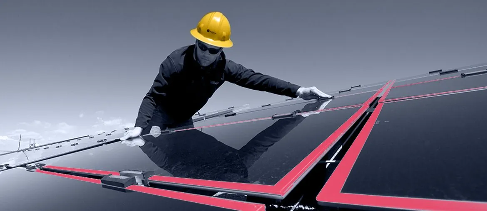

The local page asks people to get an estimate and also call to schedule. A short photo-first intake could prepare the office before the call.
Prepared for Chris Meadows
Keep artisan hiring from slowing the service path
For Lincoln Way, the hard part is not only winning jobs. It is keeping estimates, schedules, text updates, and warranty follow-up tight while each new craftsman ramps up.
Why we're here: we saw the artisan hiring signal and the local service promise. When a small team grows, office handoffs often become the first weak spot.
Our read
The artisan role points to more field capacity, not a software hiring plan. The real pressure is keeping the 8-step Service Path steady from first call to warranty service. Ace says software supports each process step, and Lincoln Way promises easy scheduling, text updates, and an 11-month warranty check. If those handoffs stay manual, new capacity can create more calls, more missed details, and slower follow-up for homeowners and commercial clients.
Where we'd start
The mobile page is heavy before a high-intent visitor reaches action. Trim images and scripts around service pages before adding paid demand.
What we'd do
A scoped 6-week pilot, run by a small Elinext team under your owner priorities. The goal is to make the service path easier to repeat.
Trace the 8 steps from first call to warranty, then mark each office handoff and repeated data entry.
Ship a simple request flow for photos, service area, package choice, access notes, and call-back prep.
Link lead status, schedule slot, text update, artisan assignment, and warranty reminder in one owner view.
Fix page weight, key CTA checks, and QA tests before local search visitors reach the estimate path.
Who is Elinext
Elinext is a full-cycle software development company, founded in 1997, with about 700 in-house specialists and no freelancers. We build web, mobile, backend, QA, DevOps, AI/ML, and product design work for clients across the US, Europe, and Asia. For this kind of owner-facing tool, the relevant proof is delivery discipline: ISO 9001 and ISO 27001, plus long work with named customers. A small scoped team can fit your process without asking Chris to manage a large vendor.
Siemens
Broadcom
Volkswagen
TRUMPF
TUI
Proof

Software for Roofing and Solar Paneling Contractors
Elinext joined an Agile SaaS build for project cost, materials, quotes, sales, payment schedules, and solar efficiency features.
Read case study
Fleet Management App for a US Logistics Provider
The app lets users assign drivers, send mobile updates, and stream live location data for active work.
Read case study